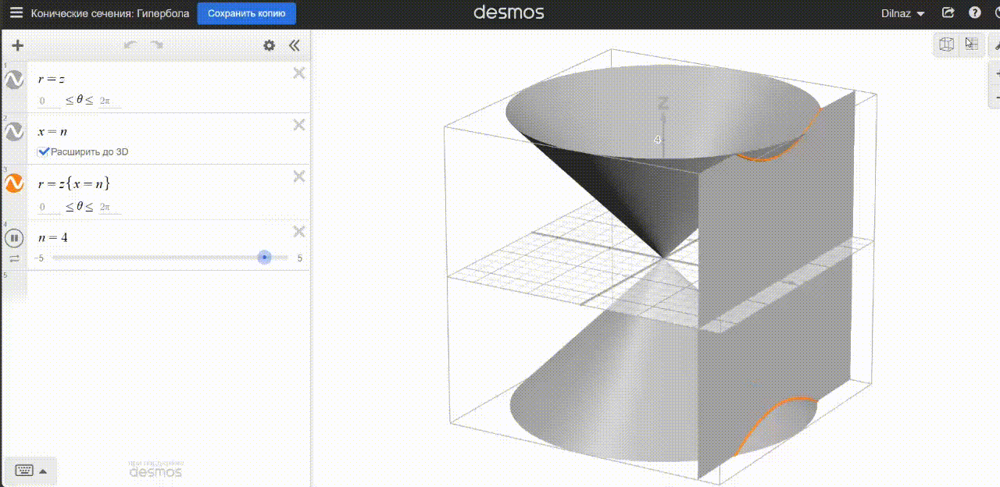

1. Табандары 4 см, 10 см және бүйір қабырғасы 5 см болатын теңбүйірлі трапеция өзінің симметрия осінен айналдырылған. Айналу денесінің толық бетінің ауданын табыңыз. Жауап: \(64π\) см2 |
|
2. Қиық конустың 6 см-ге тең жасаушысы төменгі табан жазықтығымен 60° бұрыш жасайды. Қиық конустың жоғарғы табанының диаметрі 10 см-ге тең болса, оның толық бетінің ауданын табыңыз. Жауап: \(167π\) см2 |
|
3. Қиық конустың табандарының аудандары 4π см²-ге және 100π см²-ге тең, ал осьтік қимасының ауданы 180 см². Қиық конустың толық бетінің ауданын табыңыз. Жауап: \(308π\) см2 |
|
4. Қиық конустың жасаушысы 10 см-ге, биіктігі 8 см-ге, ал бүйір бетінің ауданы 140π см²-ге тең. Қиық конустың табандарының радиустарын табыңыз. Жауап: 4 см және 10 см |
|
5. Табандарының радиустарының қатынасы 1 : 2, биіктігі 8 см-ге тең, ал жасаушысы табан жазықтығымен 45° бұрыш жасайтын қиық конустың бүйір бетінің ауданын 1 см²-ге дейінгі дәлдікпен табыңыз. Жауап: ≈ 853 см² |
|
6. Жасаушысы 2 дм, табандарының радиустары 2 см және 4 см болатын қиық конус пішіндес дауыс зорайтқыш жасау үшін қанша материал қажет? Жауабын 1 см²-ге дейінгі дәлдікпен табыңыз. Жауап: ≈ 377 см² |
|
7. Бүйір бетінің ауданы табандары аудандарының қосындысына тең қиық конус бола ма? Жауап: Болады |
8. Қиық конустың осьтік қимасының диагональдары өзара перпендикуляр, ал 12 см-ге тең жасаушысы төменгі табан жазықтығымен 60° бұрыш жасайды. Қиық конустың бүйір бетінің ауданын табыңыз. Жауап: \(72π\sqrt{3}\) см2 |
|
9. Қиық конустың арасындағы бұрышы 60°-қа тең екі жасаушысы арқылы жүргізілген жазықтық оның табандарын 6 см-ге және 4 см-ге тең хордалар бойымен қияды. Осы хордалардың әрқайсысы 90°-қа тең доғаларды кереді. Қиық конустың бүйір бетінің ауданын табыңыз. Жауап: \(10π\sqrt{2}\) см2 |
|
10. Шелектің бүйір бетін жасауға дайындаған қаңылтырдың доғаларының шамалары 60°-қа, ал олардың радиустары 72 см-ге және 48 см-ге тең. Шелектің биіктігі қандай болады? Жауабын 0,1 см-ге дейінгі дәлдікпен табыңыз. Жауап: ≈ 23,7 см |
|
11. Қиық конустың арасындағы бұрышы 90°-қа тең екі жасаушысы арқылы оның табандарының шеңберлерінен 120°-қа тең доғаларды қиятын жазықтық жүргізілген. Қиық конустың табандарының аудандарының қатынасы 1/4-ге, ал жасаушысы 2√6 см-ге тең болса, оның бүйір бетінің ауданын табыңыз. Жауап: \(24π\sqrt{6}\) см2 |
|
12. Қиық конустың осьтік қимасының диагональдары өзара перпендикуляр, биіктігі 12 см-ге тең, ал жасаушысы төменгі табан жазықтығымен 60° бұрыш жасайды. Қиық конустың толық бетінің ауданын табыңыз. Жауап: \(96π(1 + \sqrt{3}\))см2 |
13. Қиық конустың төменгі, жоғарғы табандары мен бүйір беті аудандарының қатынасы, сәйкесінше, 4 : 3 : 2 қатынасына тең. Оның жасаушысының төменгі табанына көлбеулік бұрышын табыңыз. Жауап: 60° |
|
14. Егер шелектің бүйір бетін жасау үшін доғаларының шамасы 72°-тан, ал олардың радиустары 92 см және 65 см болатын материал дайындалған болса, шелектің биіктігі қандай болуы мүмкін? Шелекті жасау үшін өлшемдері 105×30 см болатын қаңылтыр жете ме? Жауап: h = \(10,8\sqrt{6}\) см; жетпейді |